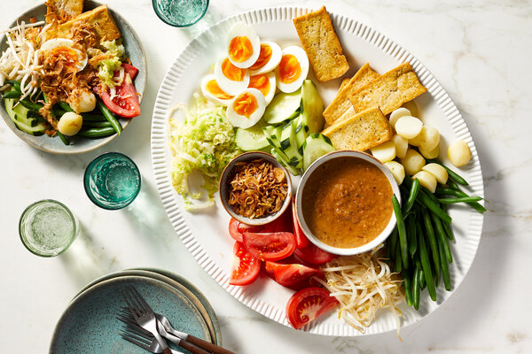

GADO-GADO

INGREDIENTS
- 2 cups mixed vegetables (such as green beans, bean sprouts, carrots, cabbage, cucumber, etc.)
- 1 block of firm tofu, cut into small cubes
- 2 hard-boiled eggs, sliced
- 1 cup cooked rice
- 1/4 cup roasted peanuts, chopped
- 1/4 cup fried shallots
For the peanut sauce:
- 1 cup roasted peanuts
- 2 cloves garlic, minced
- 2 red chillies, chopped
- 2 tablespoons tamarind paste
- 1 tablespoon palm sugar
- 1/2 cup water
- 1/4 cup coconut milk
- Salt, to taste
INSTRUCTIONS
- Blanch the mixed vegetables in boiling water for 1-2 minutes, then drain and set aside.
- Fry the tofu cubes in hot oil until golden brown, then remove from heat and set aside.
- Make the peanut sauce: In a blender or food processor, blend together the peanuts, garlic, red chillies, tamarind paste, palm sugar, water, and coconut milk until smooth. Add salt to taste.
- To serve, arrange the blanched vegetables, fried tofu, sliced hard-boiled eggs, and cooked rice on a plate. Drizzle the peanut sauce over the top, and sprinkle with chopped roasted peanuts and fried shallots.